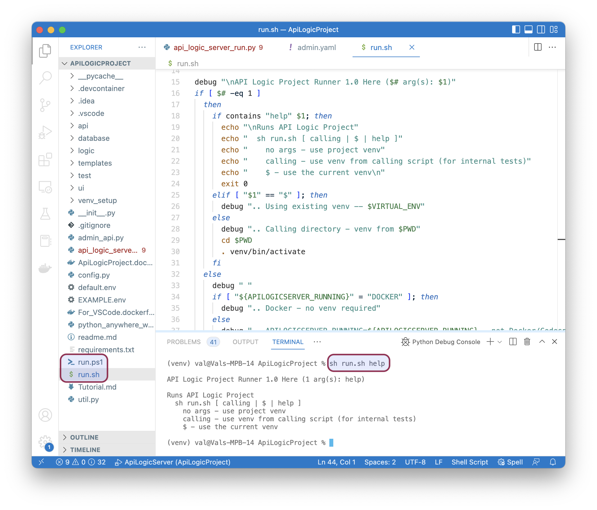
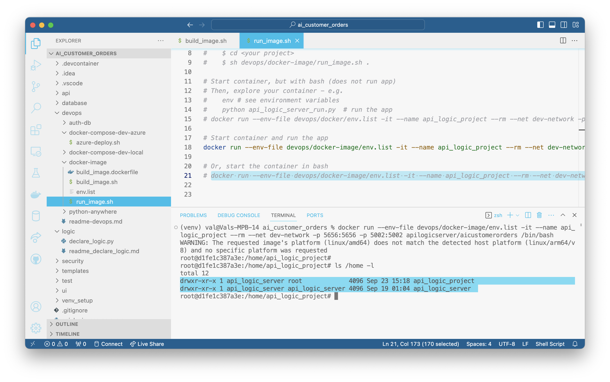
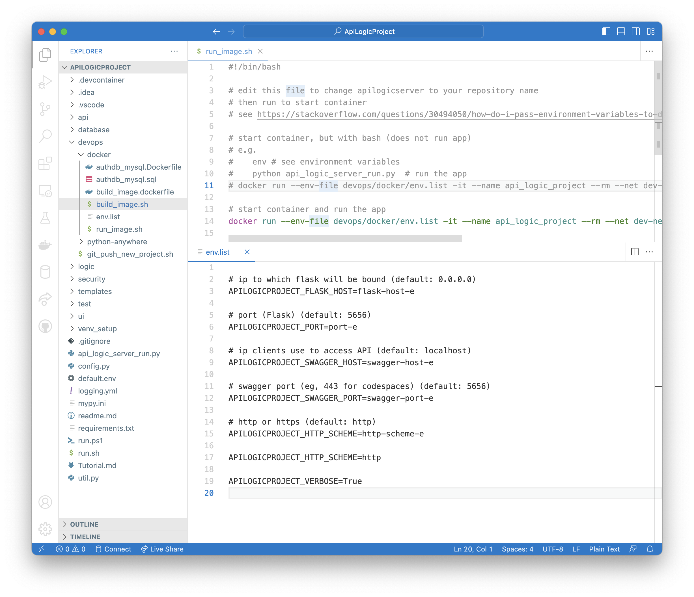

Container Configuration
 TL;DR - Configure Containers with env variables
TL;DR - Configure Containers with env variables
Containers are most commonly configured by environment variables, either in docker files, docker compose files, env files, or command line arguments. The most common configuration parameters govern database / port locations - click here.
Starting the Server
Via the Container
Once the container is created, you can start it click here, which contains:
docker run --env-file devops/docker-image/env.list -it --name api_logic_project --rm --net dev-network -p 5656:5656 -p 5002:5002 apilogicserver/<your project>
Note that:
-
Execution begins automatically (the dockerfile runs
python api_logic_server_run.py) -
Configuration is via
env.list; configure as required
Via the IDE
As described in the Quick Start, Run Configurations are provided to start the server in your IDE.
Command Line - Python
Recall that you execute your API Logic Project by starting the server, like this:
Note this presumes you have activated yourvenv. The system also provides shell scripts you can use:
Then, to run the Admin App and Swagger:
Run your browser at
Command Line - Scripts
Alternatively, you can start the server using the run script, e.g.:

Stopping the server
You can stop the server by cancelling it, or via an API:
This can be useful in testing if you don't have access to the server console. The msg parameter is optional.
Configuring the server
Configuration parameters enable you to specify hosts and ports, database locations, debug settings, etc,, as described below.
Database Locations
SQLAlchemy database URIs are set in your conf/config.py file, from your creation CLI arguments. They apply to target database(s), and the authentication database. For example:
SQLALCHEMY_DATABASE_URI : typing.Optional[str] = f"mysql+pymysql://root:p@localhost:3306/classicmodels"
Special handling is provided for sqlite databases, as described here.
Docker Directories
Projects are created with a devops/docker-image/build-image/dockerfile, resulting in the following directory structure:

Hosts and Ports
ApiLogicServer attempts to avoid port conflicts. These can arise from:
-
Common use of 8080
-
Mac use of 5000
To avoid conflicts, ports are defaulted as follows:
| For | Port |
|---|---|
| ApiLogicServer | 5656 |
Hosts are defaulted as follows:
| Installed as | Host |
|---|---|
| Docker | 0.0.0.0 |
| Local Install | localhost |
These defaults are also stored in the conf/config.py file.
Defaults: Create Time
You can specify default values for hosts, ports and databases when you create the application. Specify ApiLogicServer CLI arguments, like this:
ApiLogicServer create --project_name=~/dev/servers/api_logic_server \
--host=myhost --port=myport --swagger_host=mycloud \
--db_url=mysql+pymysql://root:p@localhost:3306/classicmodels
Overridden by: Config.py
As noted above, the defaults are stored in the conf/config.py file. You can override these values as required.
Overridden by: run args
When you run created applications, you can provide API Logic Project arguments to override the defaults. Discover the arguments using --help:
(venv) val@Vals-MBP-16 ApiLogicProject % python api_logic_server_run.py -h
API Logic Project Starting: /Users/val/dev/servers/ApiLogicProject/api_logic_server_run.py
usage: api_logic_server_run.py [-h] [--port PORT] [--flask_host FLASK_HOST] [--swagger_host SWAGGER_HOST]
[--swagger_port SWAGGER_PORT] [--http_type HTTP_TYPE] [--verbose VERBOSE]
[--create_and_run CREATE_AND_RUN]
[flask_host_p] [port_p] [swagger_host_p]
positional arguments:
flask_host_p
port_p
swagger_host_p
options:
-h, --help show this help message and exit
--port PORT port (Flask) (default: 5656)
--flask_host FLASK_HOST ip to which flask will be bound (default: localhost)
--swagger_host SWAGGER_HOST ip clients use to access API (default: localhost)
--swagger_port SWAGGER_PORT swagger port (eg, 443 for codespaces) (default: 5656)
--http_type HTTP_TYPE http or https (default: http)
--verbose VERBOSE for more logging (default: False)
--create_and_run CREATE_AND_RUN system use - log how to open project (default: False)
(venv) val@Vals-MBP-16 ApiLogicProject %
Notes:
hostis the flask-host, which maps to the IP address of the interface to which flask will be bound (on the machine itselfswagger_hostmaps to the ip address as seen by the clients
For example, 127.0.0.1 (localhost) or 0.0.0.0 (any interface) only have meaning on your own computer.
Also, it's possible to map hostname->IP DNS entries manually in /etc/hosts, but users on other computers are not aware of that mapping.
Overridden by: env variables
A common approach for host, port and database configuration is to use env variables. These can be set in your OS, or container options such as env files or docker compose.
Best Practice: env variables
We recommend the use of environmental variables when running Docker containers.
You can see the env variables in the sample env_list file - click here.
The names of the variables are those noted used in the conf/config.py file, preceded by APILOGICPROJECT_1. These values override both the conf/config.py values and the Api Logic Project CLI arguments.
Here are the most commonly set environment variables:
services:
api-logic-server:
image: apilogicserver/classicmodels
environment:
- APILOGICPROJECT_VERBOSE=true
- SECURITY_ENABLED=true
- APILOGICPROJECT_CLIENT_URI=//classicmodels.azurewebsites.net
- PYTHONPATH=/app/ApiLogicProject
## specify Database uri's:
- APILOGICPROJECT_SQLALCHEMY_DATABASE_URI=mysql+pymysql://root:p@mysql-service:3306/classicmodels
- APILOGICPROJECT_SQLALCHEMY_DATABASE_URI_AUTHENTICATION=mysql+pymysql://root:p@mysql-service:3306/authdb
For example, to override the database location on mac:
To see a list of typical env variables, click here.
Docker project env.list file
The example below illustrates you can store such variables in a classicmodels/devops/docker-image/env.list file (be sure to edit these - the current values are commented out, intended to confirm settings during initial testing). Some of the most common settings are noted below:
# ip to which flask will be bound (default: 0.0.0.0)
# APILOGICPROJECT_FLASK_HOST=flask-host-e
# port (Flask) (default: 5656)
# APILOGICPROJECT_PORT=port-e
# ip clients use to access API (default: localhost)
# APILOGICPROJECT_SWAGGER_HOST=swagger-host-e
# swagger port (eg, 443 for codespaces) (default: 5656)
# APILOGICPROJECT_SWAGGER_PORT=swagger-port-e
# http or https (default: http)
# APILOGICPROJECT_HTTP_SCHEME=http-scheme-e
# APILOGICPROJECT_HTTP_SCHEME=http
# for reverse proxy cases where the entire URI must be specified
# APILOGICPROJECT_CLIENT_URI=httpe://hoste:porte
Env variables in the `env.list` file
APILOGICPROJECT_SWAGGER_PORT

Debugging
Use the APILOGICPROJECT_VERBOSE to log the values to the console log.
Production Deployment
As noted in the gunicorn documentation:
While lightweight and easy to use, Flask’s built-in server is not suitable for production as it doesn’t scale well.
gunicorn
You can run API Logic Server servers under gunicorn. To use the default API Logic Server ports:
Or, to use the default gunicorn ports:
You will also need to:
- Update the default server/port settings in
api_logic_server_run.py - Start your browser at http://127.0.0.1:8000
PythonAnywhere
Please see the Install Instructions for information on PythonAnywhere.
Docker
You can use Docker compose files or env files to configure your project. There is an example in the default project - click here to see run-image.sh.
-
Several changes were made as of release 9.01.17. It is available as preview; click here ↩